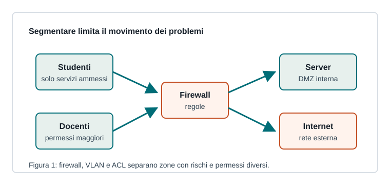

Capitoletto 5.3
Protezione e segmentazione
Segmentare una rete significa dividerla in zone con regole diverse, così un problema resta contenuto e gli accessi sono più controllabili.

Firewall e ACL
Un firewall applica regole sul traffico: sorgente, destinazione, protocollo, porta e stato della connessione. Le ACL controllano accessi su router, switch o sistemi operativi.
Una regola va scritta partendo dal principio: consentire ciò che serve, bloccare ciò che non serve, registrare gli eventi importanti.
Segmentazione e DMZ
VLAN e subnet separano gruppi con esigenze diverse. Una DMZ ospita servizi esposti, come un server web, senza collocarli direttamente nella rete interna più sensibile.
| Zona | Accesso tipico |
|---|---|
| Studenti | Internet e servizi didattici |
| Docenti | servizi didattici e strumenti interni |
| Server | solo porte necessarie |
| Ospiti | Internet, isolamento dal resto |
NAT e filtraggio
NAT traduce indirizzi privati in indirizzi pubblici o viceversa. Non è una misura di sicurezza completa, ma spesso lavora insieme al firewall per controllare traffico in uscita e pubblicazione dei servizi.
IDS e IPS
Un IDS rileva traffico sospetto e genera avvisi; un IPS può bloccarlo automaticamente. Questi strumenti non sostituiscono buone configurazioni, aggiornamenti e regole chiare.
Segmentare serve a ridurre il raggio d'azione di errori, malware e account compromessi.
Ripasso
Perché separare una rete ospiti?
Per fornire accesso a Internet senza esporre risorse interne sensibili.
Che differenza c'è tra IDS e IPS?
L'IDS rileva e segnala; l'IPS può anche bloccare il traffico sospetto.